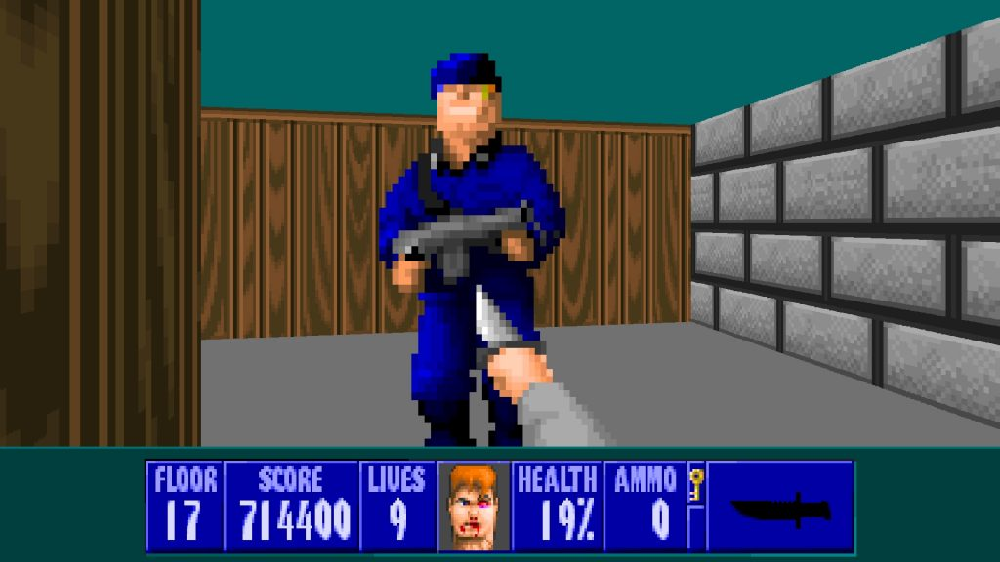
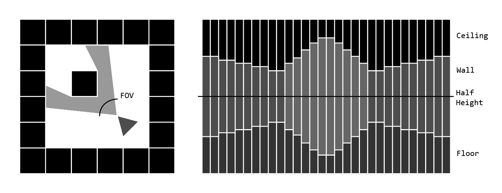
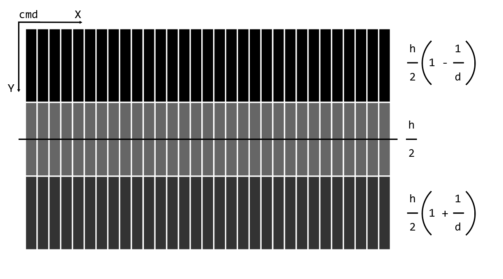
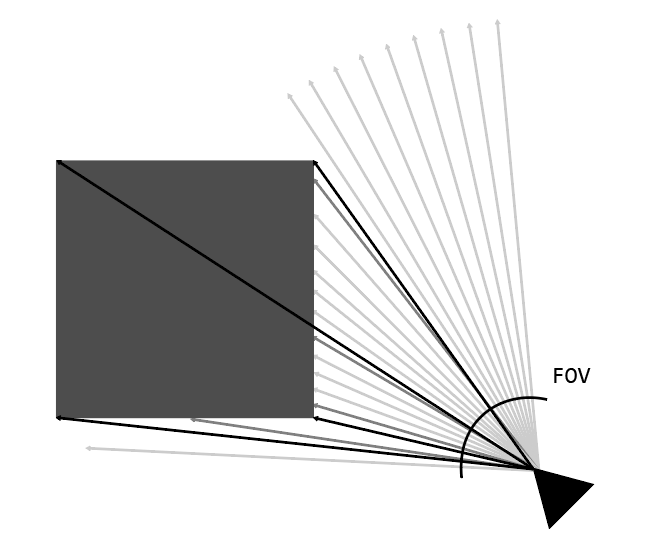

About

This project is a terminal-based raycaster demo implemented in pure C, creating a pseudo-3D first-person maze explorer directly in the console. Graphics are displayed using the curses library, which allows efficient drawing in the console.
The motivation behind this project came from a desire to immediately dive into gamedev after finishing the C programming course at university. This was my first "big" project, or at least that's how it seemed to me at the time. I wanted to start my gamedev journey from the very basics, and what could be more fundamental than writing a game demo in C, one of the more challenging languages? Before this, when I was at school I had already created simple 2D games in Pascal: Snake, Tic-Tac-Toe, but those were all flat, 2D experiences. This time, I decided to jump straight into 3D graphics, or how it commonly called "2.5D".
During the university course, we mostly solved small, isolated programming tasks - nothing that prepare for architecting a big project. When I finished implementing the raycaster, it felt like an enormous achievement. The entire code seemed so complex and sophisticated! Looking back now, it's actually just 250 lines of code where all the "magic" lies in the elegant mathematics used to create the 3D illusion. But at that moment, I was incredibly proud of it - so much that I decided to write a complete tutorial explaining how the code works. I even drew explanatory pictures and attached them to the project's README.md. I have immense respect for the pioneers of that era who had the vision and ingenuity to create such technological marvels with limited resources.
Keep in mind that I created this project and tutorial at the very beginning of my programming journey when I was still a very young programmer. Below is the original tutorial, which I decided not to separate into a separate article, but just attach here.
Introduction

RayCasting - technique in computer graphics that allows you to create 3D projections based on a 2D plane. This technique was particularly valued in an era when the processing power of computers was limited. It allowed games, the first of which was Wolfenstein 3D, to achieve an impressive illusion of three-dimensionality.
Control
To make the player move, we'll set up a way to watch for key presses on the keyboard. We're going to look for when someone presses the 'W', 'S', 'A', and 'D' keys to move the player.
void checkKeyState()
{
...
}
Now let's look at the logic of the movement. Check the labels to see what each key will do.
Esc- exitW (up)- walk forwardsS (down)- walk backwardA (left)- turn leftD (right)- turn right
For this purpose lets define:
#define ESC 27 // ESC key code
#define W 119 // W key code
#define A 97 // A key code
#define S 115 // S key code
#define D 100 // D key code
In the code fragment below, we check whether the user is currently pressing the 'A' key to perform a left turn.
int key = getch();
switch (key)
{
case A: case KEY_LEFT:
playerDir += (playerSpeed * 0.75f) * frameTime;
break;
...
}
After the program recognizes that the 'A' key has been pressed (or 'D' for turn right), we simple increment or decrement the angle of the player with the player speed.
For the up and down logic, we need to get the sin and cos of the player angle to discover the player direction and what we need to increment for the player coordinates to move the player. In the code fragment below, we check whether the user is currently pressing the 'W' key to walk forward.
case W: case KEY_UP:
playerX += sinf(playerDir) * playerSpeed * frameTime;
playerY += cosf(playerDir) * playerSpeed * frameTime;
if (map[(int)playerY][(int)playerX] == '#')
{
playerX -= sinf(playerDir) * playerSpeed * frameTime;
playerY -= cosf(playerDir) * playerSpeed * frameTime;
}
break;
As you can see, we also check for a collision as we move, and if there is one, we stand in the same place.
Similarly, we check for pressing the Esc key to exit the program at the right moment and clear the console window.
case ESC:
clear();
refresh();
endwin();
exit(1);
break;
Logic
RayCasting transforms a two-dimensional map, which is represented as an array of characters, into a three-dimensional projection on the screen. Our character array is a matrix with values # for wall and . for empty space.
char map[mapHeight][mapWidth] = {
{"################"},
{"#..#...........#"},
{"#..#....########"},
{"#..#...........#"},
{"#..#...#.......#"},
{"#......#.......#"},
{"#..............#"},
{"###............#"},
{"#..............#"},
{"#......####..###"},
{"#......#.......#"},
{"#......#.......#"},
{"#..............#"},
{"#.....########.#"},
{"#..............#"},
{"################"}
};
The logic behind RayCasting is to throw rays in the direction of the player's view. This is necessary to find walls on the map and check the distance to them in order to calculate the height of the lines from which the objects are drawn.
The direction of the ray rayDir for drawing a particular stripe on the screen is based on the fact that during the entire pass along the axis X of the screen it is necessary to completely pass the angle of player's field of view FOV.
void renderFrame()
{
for (int x = 0; x < screenWidth; x++)
{
float rayDir = (playerDir + playerFOV / 2.0f) - ((float)x / (float)screenWidth) * playerFOV;
float wallDistance = 0.0f;
float rayX = sinf(rayDir);
float rayY = cosf(rayDir);
...
}
}
We will search for the distance to the wall iteratively: at the beginning we have a direction in which we want to check for the existence of an object, then we cyclically, in small steps wallDistance += 0.1f go in this direction. In the end, either the ray has collided with an object hitWallFlag, or it has gone beyond the radius of visibility playersMaxDepth.
int hitWallFlag = 0;
int hitEdgeFlag = 0;
while (!hitWallFlag && wallDistance < playersMaxDepth)
{
wallDistance += 0.1f;
int distanceX = (int)(playerX + rayX * wallDistance);
int distanceY = (int)(playerY + rayY * wallDistance);
if (distanceX < 0 || distanceX >= mapWidth || distanceY < 0 || distanceY >= mapHeight)
{
hitWallFlag = 1;
wallDistance = playersMaxDepth;
}
else if ( map[distanceY][distanceX] == '#')
{
hitWallFlag = 1;
...
}
for (int y = 0; y < screenHeight; y++)
{
...
}
}
Well, now we have everything we need to create the illusion of a third dimension!
Rendering
Having the distance d to the object in the required direction, we can calculate its height b' relative to the screen. So, we need to understand how the height of objects changes when the distance to them changes.
To draw the stripe, we need to set two Y axis coordinates: the first one is the point where the wall starts and the ceiling ends, and the second one is where the wall ends and the floor starts. Let's make these two points symmetrical about the center in height by setting them as is below.
It can be seen that if the distance to the wall becomes bigger, these points go to the center and the height of the stripe becomes smaller, so the sky and the floor cover almost all the space. And if the distance gets smaller, these points go to the borders and the stripe gets bigger. Let's take a look at how this is realized.
int ceilingHeight = (float)(screenHeight/2.0) - screenHeight / ((float)wallDistance);
int floorHeight = (float)(screenHeight/2.0) + screenHeight / ((float)wallDistance);
for (int y = 0; y < screenHeight; y++)
{
if (y < ceilingHeight)
{
float d = 1.0f + ((float)y - screenHeight / 2.0) / ((float)screenHeight / 2.0);
int gradientIndex = (int)(d * gradientSize);
if (gradientIndex < 0) gradientIndex = 0;
if (gradientIndex >= gradientSize) gradientIndex = gradientSize - 1;
char ceilingShader = gradient2[gradientIndex];
attron(COLOR_PAIR(2));
mvprintw(y,x,"%c",ceilingShader);
attroff(COLOR_PAIR(2));
}
else if (y >= ceilingHeight && y <= floorHeight)
{
int gradientIndex = (int)((wallDistance / playersMaxDepth) * gradientSize);
if (gradientIndex < 0) gradientIndex = 0;
if (gradientIndex >= gradientSize) gradientIndex = gradientSize - 1;
char wallShader = gradient1[gradientIndex];
if (hitEdgeFlag) wallShader = ' ';
attron(COLOR_PAIR(1));
mvprintw(y,x,"%c",wallShader);
attroff(COLOR_PAIR(1));
}
else
{
float d = 1.0f - ((float)y - screenHeight / 2.0) / ((float)screenHeight / 2.0);
int gradientIndex = (int)(d * gradientSize);
if (gradientIndex < 0) gradientIndex = 0;
if (gradientIndex >= gradientSize) gradientIndex = gradientSize - 1;
char floorShader = gradient2[gradientIndex];
attron(COLOR_PAIR(3));
mvprintw(y,x,"%c",floorShader);
attroff(COLOR_PAIR(3));
}
}
Here we calculate the brightness level of the character that will be displayed in each specific cell of the console based on the distance to the object. The characters themselves are taken from arrays, where gradients from the brightest to the darkest are already given.
#define gradientSize 10
char gradient1[gradientSize]="@%#+=*:-. ";
char gradient2[gradientSize]="&Oi?+~>:. ";
And the colors were initialized in the main function using the init_pair function.
start_color();
init_pair(1, COLOR_RED, COLOR_BLACK);
init_pair(2, COLOR_BLUE, COLOR_BLACK);
init_pair(3, COLOR_BLACK + 8, COLOR_BLACK);
Edge Rendering
Now let's look at the display of wall edges. If we have determined that there has been a collision with a wall, we can immediately determine its location and the location of its four edges. So we have four vectors that point from the viewer exactly into the edges of the wall. If the angle between the emitted ray and one of these vectors becomes small, we will take this part of the wall as an edge and not draw it.
The minimum angle between vectors is achieved when their scalar product is maximized. We will look for the scalar product between the direction vector and the vectors leading into the edges of the wall.
float edgeDistance[4];
float dotProduct[4];
for (int i = 0; i < 4; i++)
{
int edgeX = i % 2;
int edgeY = i / 2;
float vectorX = (float)distanceX + edgeX - playerX;
float vectorY = (float)distanceY + edgeY - playerY;
edgeDistance[i] = sqrtf(vectorX * vectorX + vectorY * vectorY);
dotProduct[i] = (rayX * vectorX / edgeDistance[i]) + (rayY * vectorY / edgeDistance[i]);
}
for (int i = 0; i < 4; i++)
{
for (int j = i + 1; j < 4; j++)
{
if (edgeDistance[j] < edgeDistance[i])
{
float temp = edgeDistance[j];
edgeDistance[j] = edgeDistance[i];
edgeDistance[i] = temp;
temp = dotProduct[j];
dotProduct[j] = dotProduct[i];
dotProduct[i] = temp;
}
}
}
float proximity = 0.004f;
for (int i = 0; i < 2; i++)
{
if (acosf(dotProduct[i]) < proximity)
{
hitEdgeFlag = 1;
break;
}
}
Now we can see the edges of the walls.
Game Cykle
The projection should be redrawn at each iteration of the rendering. That's why our game loop will consist of an infinitely running while(1), which every iteration will calculate the time change per frame, check for keyboard presses, render a new frame based on the new changes, overlay the useful information and statistics on top of it, and display it all on the screen from the buffer. Here's what the realization of this looks like in code.
while(1)
{
timeAfter = clock();
frameTime = (float)(timeAfter - timeBefore) / CLOCKS_PER_SEC;
timeBefore = timeAfter;
map[(int)playerY][(int)playerX] = '.';
checkKeyState();
map[(int)playerY][(int)playerX] = 'o';
renderFrame();
displayStats();
refresh();
}
That's all, thank you for your attention!
Links
- GitHub Repository
- Sources and Inspirations: